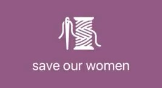

Vivian Wu
University of California, San Diego · Computer Science Major · Cognitive Science Minor
Hello and welcome to my portfolio! I'm currently a second year and I have passion for gaining experience in new technical skills. I'm interested in Software Engineering, Human Computer Interaction, and related technological fields!
Projects:
Save Our Women
Inspired by recent events and increased media presence on women safety. This iOS app aims to promote the safety of women through awareness and action.
day.ly

Inpsired by decreased motivation for academics amidst COVID-19. This iOS and Android app allows for users to utilize Pomodoro strategies to effectively balance work and relaxation.
Presidential Bias Predictor

Classification model to predict the 2020 presidential bias of TikTok videos